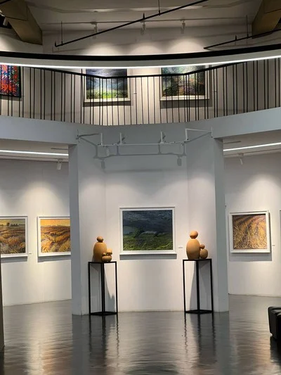
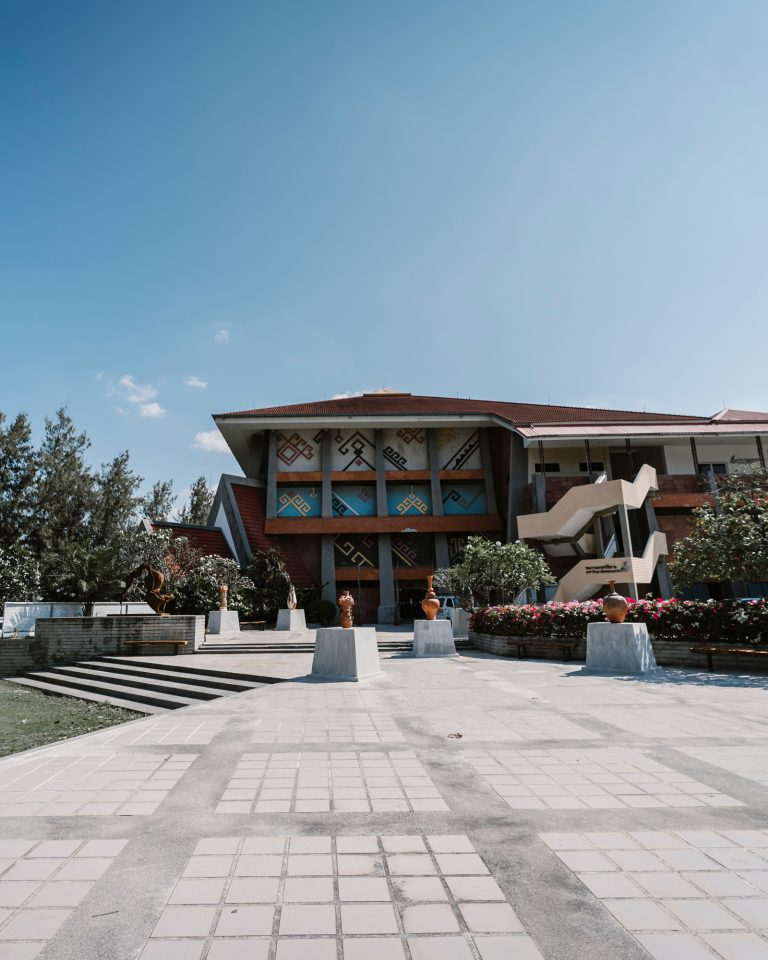
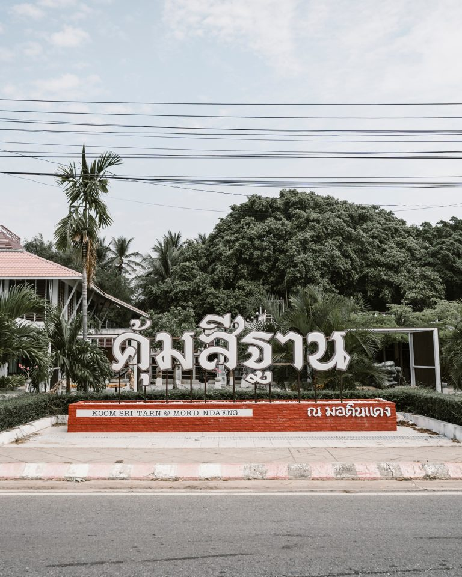
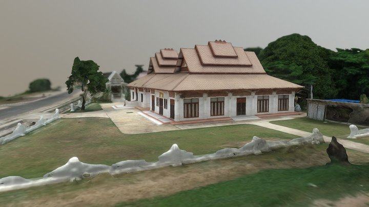
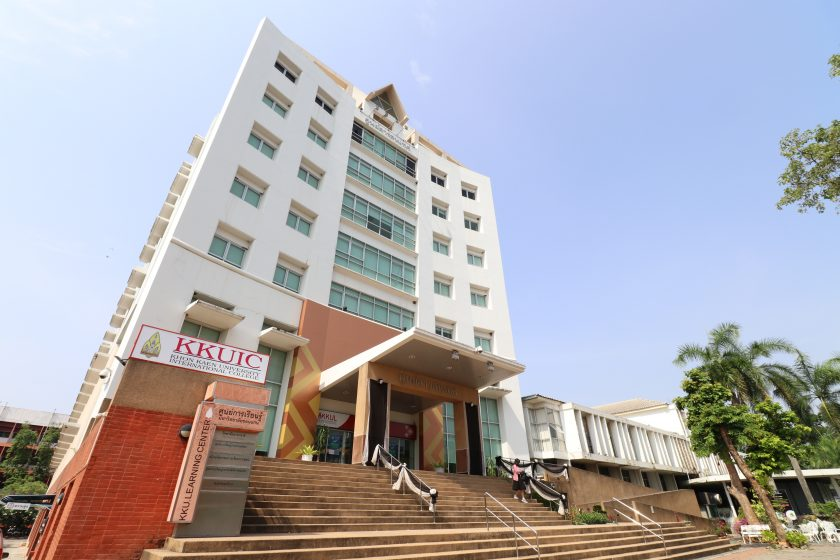
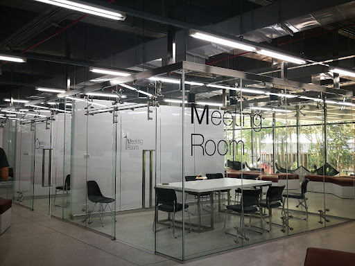

หอศิลปวัฒนธรรม มหาวิทยาลัยขอนแก่น
หอศิลปวัฒนธรรม มหาวิทยาลัยขอนแก่น เป็นแหล่งเรียนรู้ที่มีบทบาทสำคัญในการอนุรักษ์ สืบสาน
และเผยแพร่ศิลปวัฒนธรรมของภาคตะวันออกเฉียงเหนือ ภายในอาคารจัดแสดงนิทรรศการเกี่ยวกับประวัติศาสตร์อีสาน วิถีชีวิต ความเชื่อ ประเพณี
และภูมิปัญญาท้องถิ่น ผ่านโบราณวัตถุ ภาพถ่าย และสื่อมัลติมีเดีย นอกจากนี้ยังใช้เป็นสถานที่จัดกิจกรรมทางวัฒนธรรม
การแสดงศิลปะพื้นบ้าน และกิจกรรมทางวิชาการ เพื่อเสริมสร้างความเข้าใจในคุณค่าทางวัฒนธรรมให้กับนักศึกษาและประชาชนทั่วไป


คุ้มสีฐาน (Si Than Community)
คุ้มสีฐานเป็นพื้นที่วัฒนธรรมที่สะท้อนอัตลักษณ์ของชุมชนอีสาน ตั้งอยู่ในบริเวณใกล้บึงสีฐาน ภายในออกแบบให้มีบรรยากาศเรียบง่าย
สอดคล้องกับวิถีชีวิตดั้งเดิม ใช้เป็นพื้นที่จัดกิจกรรมทางวัฒนธรรม ประเพณี และกิจกรรมชุมชน เช่น งานสีฐานเฟสติวัลและกิจกรรมลอยกระทง
คุ้มสีฐานทำหน้าที่เป็นจุดเชื่อมโยงระหว่างมหาวิทยาลัยกับชุมชนโดยรอบ ส่งเสริมการมีส่วนร่วมของประชาชน และเป็นแหล่งเรียนรู้เชิงวัฒนธรรมที่มีชีวิต


หอสมุดกลาง มหาวิทยาลัยขอนแก่น
หอสมุดกลางเป็นศูนย์รวมแหล่งความรู้และสารสนเทศที่สำคัญของมหาวิทยาลัยขอนแก่น ให้บริการหนังสือ วารสาร วิทยานิพนธ์
และฐานข้อมูลอิเล็กทรอนิกส์ทั้งในและต่างประเทศ ภายในอาคารมีพื้นที่อ่านหนังสือที่เงียบสงบ พื้นที่ทำงานกลุ่ม
และพื้นที่สำหรับการเรียนรู้ด้วยตนเอง หอสมุดกลางมีบทบาทสำคัญในการสนับสนุนการเรียน การสอน และการวิจัยของนักศึกษา คณาจารย์ และบุคลากร


อาคารสิริคุณากร
อาคารสิริคุณากรเป็นอาคารบริหารหลักของมหาวิทยาลัยขอนแก่น ใช้เป็นที่ตั้งสำนักงานอธิการบดีและหน่วยงานสำคัญต่าง
ๆ อาคารมีสถาปัตยกรรมที่สง่างาม เป็นระเบียบ และสะท้อนถึงความเป็นสถาบันการศึกษาชั้นนำของภาคตะวันออกเฉียงเหนือ